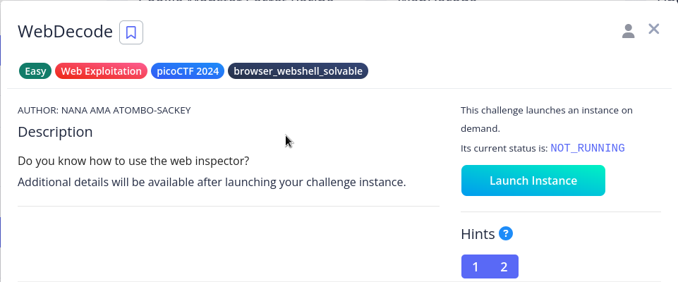
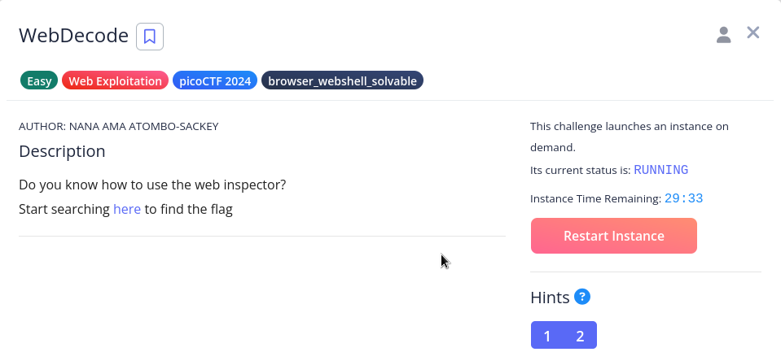
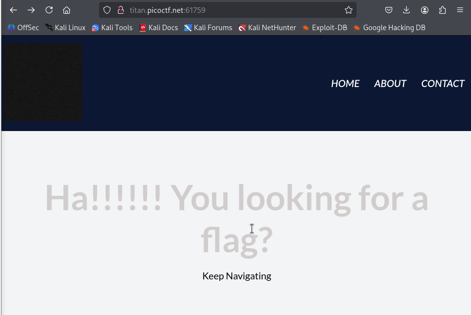
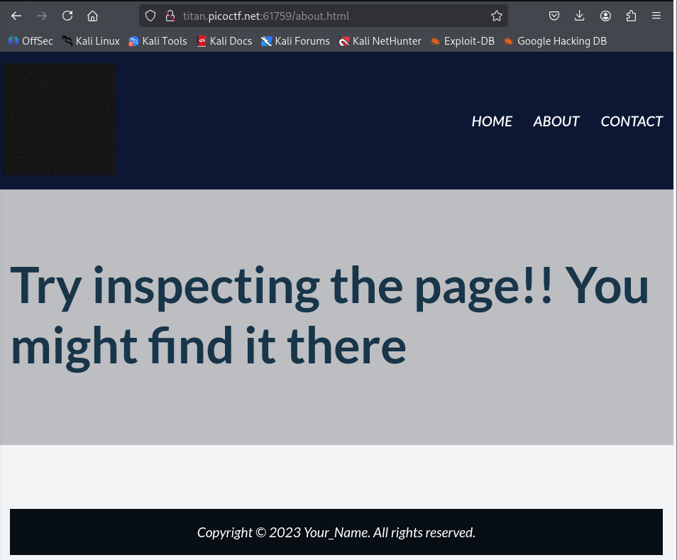
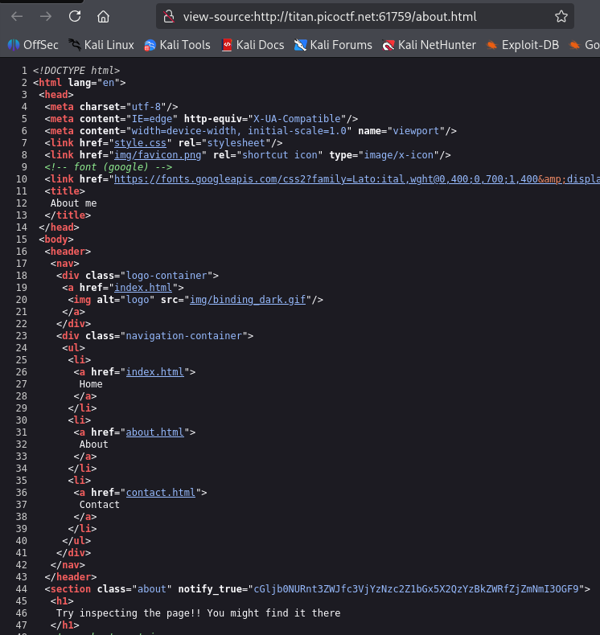
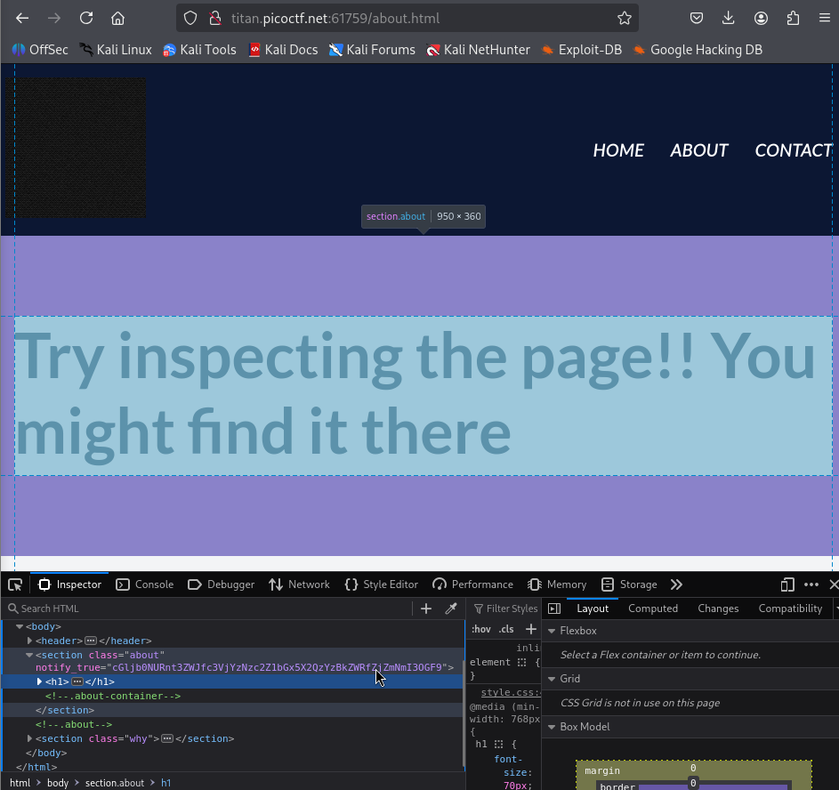
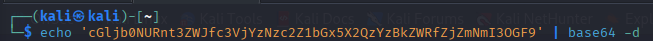
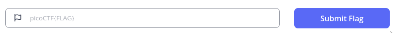

Práctica Taller: WebDecode (picoCTF) – Pentest completo paso a paso
Obxectivo
Realizar un test de intrusión completo (6 fases) sobre a máquina, desde enumeración ata explotación, persistencia e redacción do informe.
De interese
Non se aplican as Fases 4 e 5 a este reto:
- Ámbito do reto: WebDecode é un reto de tipo web / forensic cuxo obxectivo é identificar contido oculto no código fonte e decodificalo. Non se obtén acceso á máquina remota nin a contorno de sistema, só se interpreta contido que o servidor serve publicamente.
- Non hai acceso a shells/usuarios: As fases de post-explotación e persistencia supoñen ter acceso a un sistema comprometido (shell, privilexios, usuario). Neste reto non se consegue nin se require ese nivel de control; a solución baséase exclusivamente en análise estática e decodificación.
- Instancias efémeras / contidas: As instancias de picoCTF son contedores/páginas provisionadas para o reto. Modificar, subir ou instalar software nesa instancia adoita ser imposible ou non é necesario; ademais, moitas plataformas non permiten alteracións persistentes do entorno de reto.
- Deseño pedagóxico: Moitos retos introductorios céntranse en técnicas concretas (p.ex. ocultación, codificación, steganografía). Incluir post-explotación/persistencia sería fóra do obxectivo didáctico e engadiría ruído á aprendizaxe.
- Ética e regras da competición: Mesmo se puideras realizar cambios persistentes, as regras de competición adoitan prohibir a alteración do entorno compartido ou a publicación de exploits activos. Non é apropiado intentar instalacións/persistencia en plataformas de retos.
- Evidencia e informe: Para documentar o reto abonda con capturas, extracción do recurso oculto, comandos usados (p. ex. base64 -d) e a flag. Non hai artefactos de post-explotación que aportar.
Resumo: Como o reto consiste en descubrir e decodificar contido servido publicamente (HTML/JS), non se obtén un acceso interactivo ao sistema que permita accións post-explotación ou crear mecanismos de persistencia. Por iso, as Fases 4 e 5 non son aplicables neste caso.
Pasos básicos
-
Configurar en VirtualBox unha máquina Kali Linux coa rede en modo NAT.

-
Arrancar a máquina Kali Linux:
- Acceder a Practice.
- Escoller o reto e facer clic en
Launch Instance - Unha vez instanciado o reto ofreceramos máis información.
- Explorar un vector de ataque para conseguir a flag.
- Recoller información do sistema.
- Conseguir a flag desexada.
- Elaborar un informe final coas evidencias obtidas.
Fases dun test de intrusión (Pentest)

Fase 1: Recopilación de información
Prerrequisito
Arrancar a máquina Kali Linux na primeira opción de arranque.
1) Acceder a WebDecode - picoCTF e lanzar a instancia do reto:

2) Unha vez arrancada a instancia o reto ofreceramos máis información. Neste caso unha ligazón:

3) Accedemos a URL para atopar o flag desexado:

4) Visitamos as seccións ofrecidada no sitio web e atopamos unha información interesante na sección ABOUT
Hints
Se algunha vez estás atascado no reto picoCTF ofrece Pistas(Hints) que poden ser de axuda para saír dese atasco.
Fase 2: Análise de vulnerabilidades
Identificación de código comentado/oculto:
- Tal como se enuncia no reto debemos buscar código comentado/oculto no sitio web ofrecido. Así, buscamos no código fonte do sitio web a través do propio navegador ou a través do inspector web.



Fase 3: Explotación
Comprobamos que existe código oculto: unha cadea en base64. Polo que, procedemos a decodificala:

Xa obtemos o Flag que podemos subir a picoCTF

Fase 4: Post-explotación
Non se precisa para resolver o reto.
Fase 5: Persistencia
Non se precisa para resolver o reto.
Fase 6: Informe final
Seguir o indicado en Informes de Pentesting para obter os informes.
Exemplos nas seccións